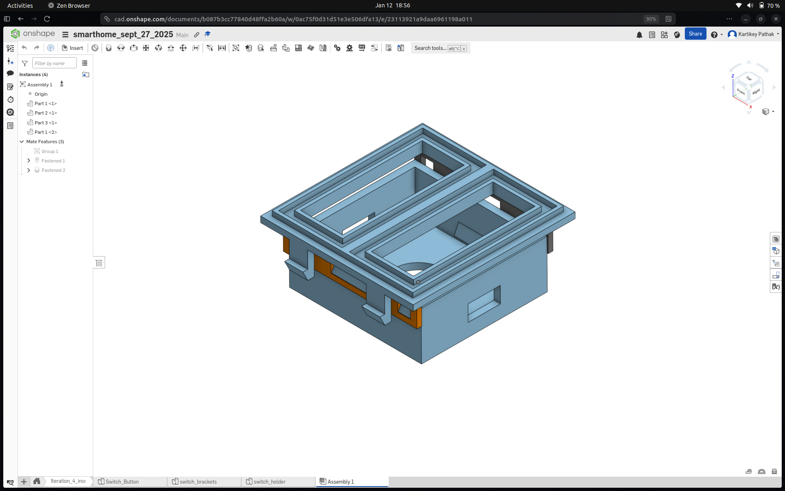
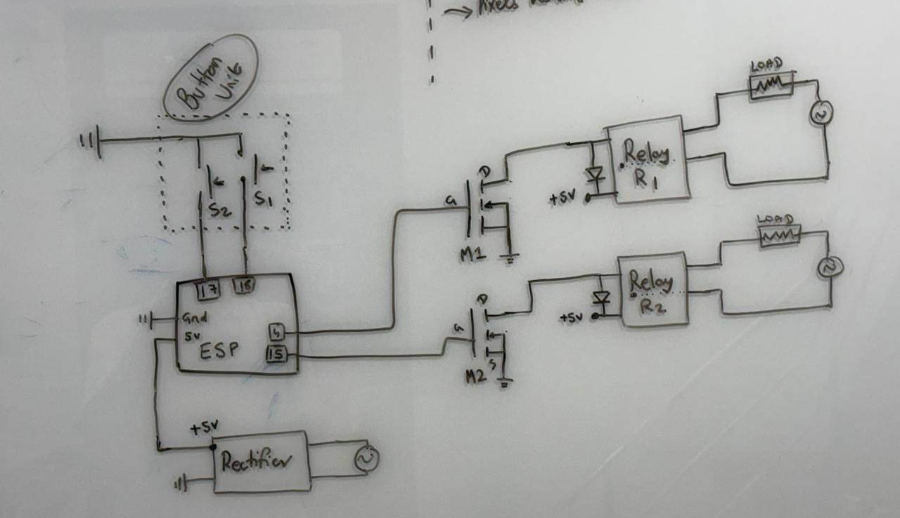
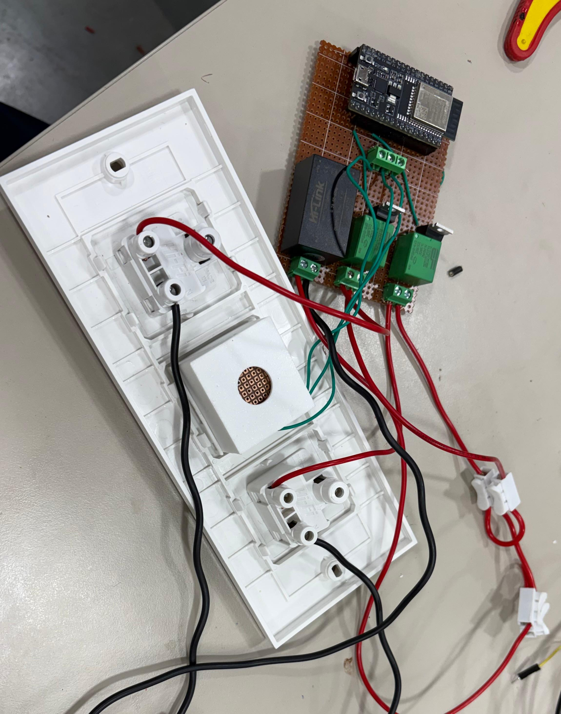
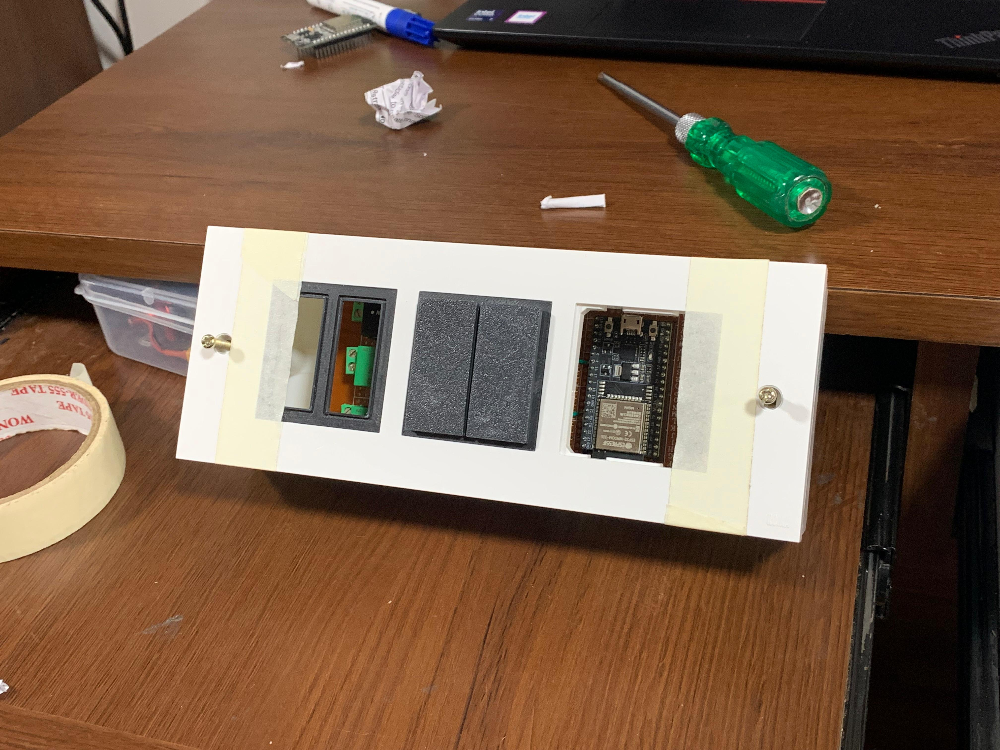

This project turns regular electrical switches into smart switches that can be controlled remotely. It combines hardware design, embedded programming, cloud connectivity, and mobile app development.
Users can control lights, fans, and other devices in two ways: using physical switches on the wall or through a Flutter mobile app. The system uses BLE (Bluetooth Low Energy) for WiFi setup, MQTT for cloud communication, and NVS storage to remember settings after power off.
I built this project from scratch, handling everything from design to deployment:
I designed the physical parts using CAD software:
The circuit board includes:

CAD Model of the switch button and box

Circuit diagram showing ESP32, relays, MOSFETs, and power supply

Perf board with ESP32, relay modules, and MOSFET drivers

Final product installed and working
App Demo video.
Demo video for button control.
The ESP32 firmware has these features:
The system controls 6 devices. Each device has:
BLE provisioning lets you set up WiFi without hardcoding it:
JSON Format:
{"ssid":"MyWiFi","password":"12345678"}
MQTT is used to send and receive messages:
smart_switch/<board_id>/<device>/command
smart_switch/<board_id>/<device>/status
smart_switch/<board_id>/info
smart_switch/<board_id>/rename
Commands you can send: ON, OFF, TOGGLE, STATUS
These settings are saved even after power off:
Physical buttons work like this:
Every 5 seconds, the board sends this JSON:
{
"board": "esp_12ab34",
"devices": [
{"id": "light_1", "name": "Living Room", "type": "light"},
{"id": "fan_1", "name": "Bedroom Fan", "type": "fan"},
...
]
}
This keeps the app updated with the latest status.
You can rename the board or devices using MQTT:
{"type":"board","new_name":"home_01"}
{"type":"device","target":"light_1","new_name":"Dining
Light"}
The system checks the name is valid, saves it to NVS, updates MQTT topics, and confirms the change.
The mobile app is built with Flutter and lets you:
The app was "vibe coded" - built quickly with focus on making it easy to use.
Problem: Need to control 220V AC using 3.3V signals from ESP32 without danger
Solution: Used optocoupled relays and MOSFETs to completely isolate low voltage from high voltage circuits
Problem: Users shouldn't need to reprogram the device to change WiFi
Solution: Built BLE provisioning - the phone app sends WiFi details via Bluetooth, ESP32 saves them to NVS
Problem: App, physical buttons, and remote commands need to stay synchronized
Solution: Used MQTT pub/sub - every state change publishes a status update. Heartbeat messages every 5 seconds keep everything synced
Problem: Allow renaming while keeping MQTT connections working
Solution: When renaming happens, unsubscribe old topics, save new name to NVS, then subscribe to new topics
Problem: Physical buttons send multiple signals when pressed once
Solution: Added software debouncing and used a task queue to handle button presses reliably
Problem: Limited Flutter experience but needed working app fast
Solution: "Vibe coded" it - built basic features first, then improved the UI based on testing